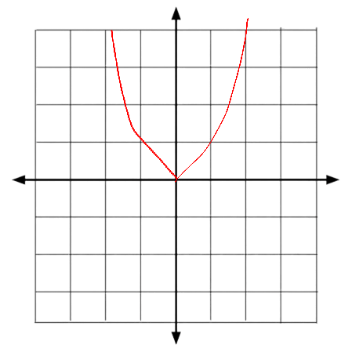
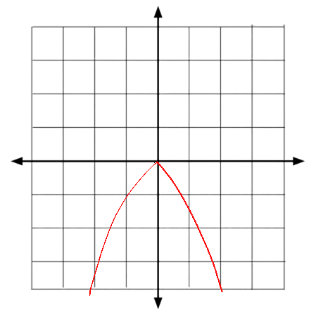

A Quadratic function is a quadratic equation that is represented by a U-shaped line on a coordinate graph like this one…

The shape of a quadratic function is called a parabola which is a U-shaped figure that gets thinner and thinner relative to the x value.
Like a quadratic, these follow the same standard form and a is a nonzero number…
A quadratic function may either open above or below depending on if it has a positive or negative value…

Now graphing a quadratic function takes a lot of steps but isn’t impossible to do. A quadratic function has many elements, examples would be y-intercepts, x-intercepts, the vertex and more.
To calculate the y-intercept in a quadratic function, you would substitute x as 0. So for example, f(x) = 2x2 + 3x + 3, substitute x as 0…
In this example, the Y-intercept is 3.
A more straightforward formula for finding the Y-intercept in a quadratic function is…
The X-intercept(s) in a quadratic function are the point/points that cross the x-axis. To calculate the x-intercepts, substitute f(x), y or whatever the quadratic is equal to as 0…
And solve the quadratic equation using the quadratic formula…
Looks like the roots of this quadratic are imaginary, this means that the quadratic function doesn’t have x-intercepts at all because no points cross the x-axis. If the roots are not imaginary numbers, then the parabola has points that cross the x-axis somewhere on the graph.
The vertex is the highest point (if a is a negative) or the lowest point (if a is a positive). There are two values that are needed to be solved in order to find the x and y values of the vertex. First is the x-coordinate of the vertex which is…
X is -b over 2a. An example would be…
Substitute the values into the formula…
The x-coordinate of the vertex is -3/4. Finding the y-coordinate of the vertex involves substituting x with the answer from -b/2a which is -3/4…
The vertex is at (-3/4, 15/8).